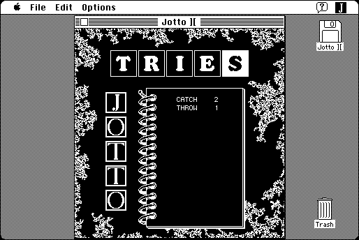

Download
jotto-ii-12.zip (217K) Jotto ][ 1.2 repackaged into a zipped hfs disk image and checksum file. The disk image can be mounted with Mini vMac.
jotto-ii-12.hqx (311K) Jotto ][ 1.2 in the original format.
copyright: Mark Pilgrim
mod date: Nov 7, 1994
license: GPL
last known url
(gone)
"A simple word game, guessing five and six letter words and getting feedback as to how many letters are correct. Similar to MasterMind, only with words." for "System 7.0 or later". Source code is available.

Download source code
jotto-ii-12-c.zip (303K) Jotto ][ 1.2 Source repackaged into a zipped hfs disk image and checksum file. The disk image can be mounted with Mini vMac.
jotto-ii-12-c.hqx (483K) Jotto ][ 1.2 Source in the original format.
If you find these downloads useful, please consider helping the Gryphel Project, which hosts them.
Here are the md5 checksums for the downloads, signed with Gryphel Key 5:
--------- GRY SIGNED TEXT --------- 66b6fd58a086333a1c11d0a0fae50b75 jotto-ii-12.zip 92ed356e4f25edc0a1728e722cd753be jotto-ii-12.hqx f4172a3339d6c3f2ff9ee0e83b489650 jotto-ii-12-c.zip af8d8014a4bd583bdaef4d89e0ac2657 jotto-ii-12-c.hqx ------- BEGIN GRY SIGNATURE ------- Gry/4Xa8CFcUzxdN/D3Ssa5HNiIFpddjapubrF+ttCap6SgbT1XqNKMWvCP1Ovju tTt6Q4F2J8/YQLjkODxLO463FeYUOlzry2ueUMvs/rpO1eOLREe0ZJmyHv3eacdS x/MvwZBEY2iLMQcvLcZWQruwU1jyKTSlankCNzDAO1I/dCZwEa+6mTi7i6pFnI+k -------- END GRY SIGNATURE --------